Steward
分享是一種喜悅、更是一種幸福
掌機 - Miyoo - 改造電池以及L1、R1、L2、R2按鍵
Miyoo掌機最缺乏的按鍵就屬L、R按鍵，雖然沒有這兩顆按鍵還是可以玩遊戲，不過那種感覺就是差了一點，總是說不出哪裡怪怪的，因此，為了讓Miyoo掌機可以更健全，司徒決定再次對Miyoo動刀，以補足這方面的遺憾，不過既然要動刀，那就乾脆一次願望全部滿足，直接把L1、R1、L2、R2按鍵都加上，因此，司徒特地找了下可以共用的按鍵，用以補足F1C500S腳位不夠的問題，改機過程說明如下。
為了可以擁有更佳的按鍵回饋以及增加盲按的準確度，司徒使用如下大顆按鍵
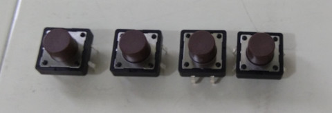
接著就開始鑿洞
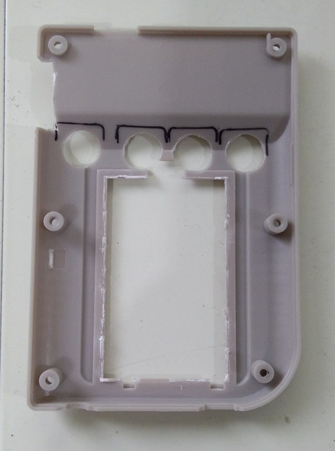
電池使用1000mA
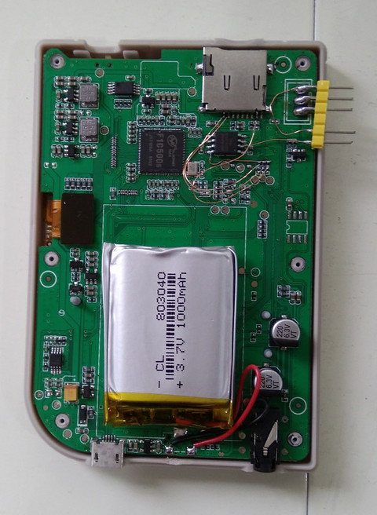
由於屏本身只有使用海綿固定，容易凹陷，因此，司徒直接使用AB膠固定
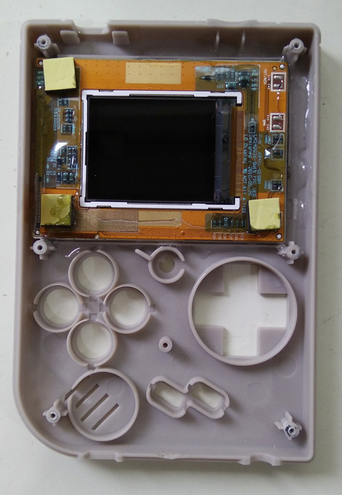
接著固定按鍵
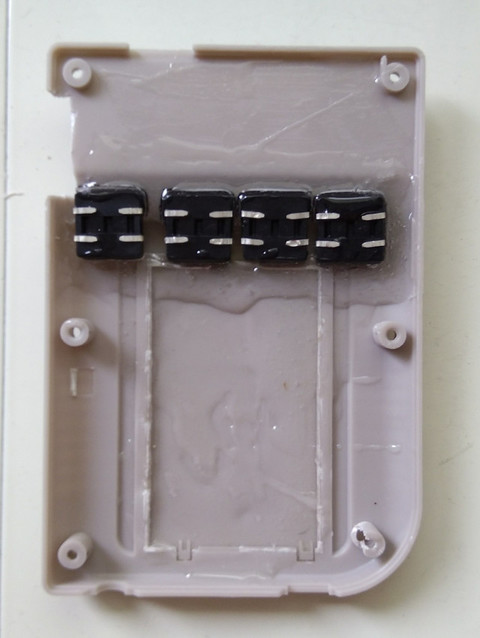
開始飛線
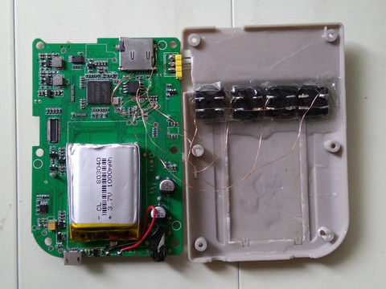
使用膠帶避免短路
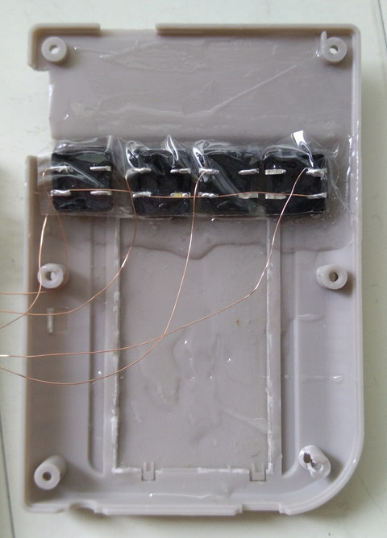
不算完美的鑿洞
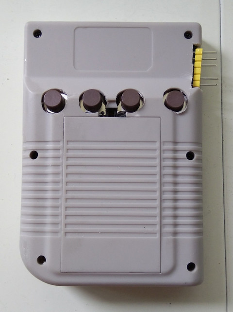
磨平後的按鍵就不會把外殼撐開
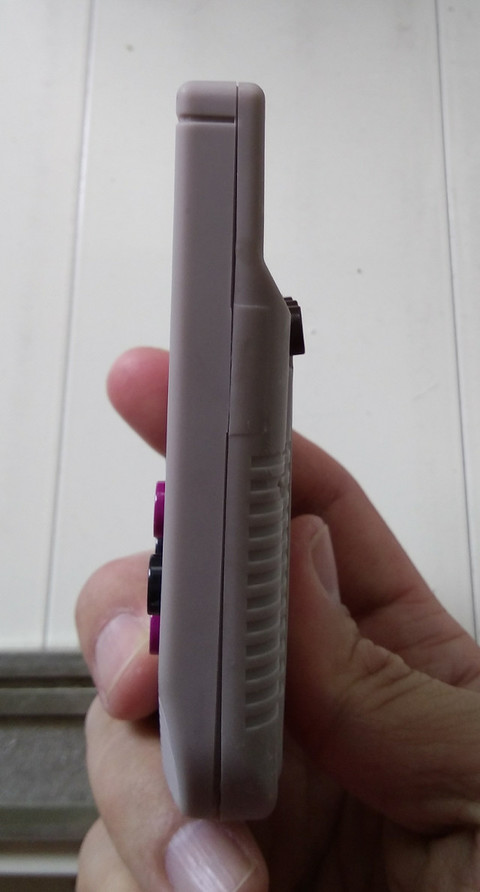
電路接腳(按鍵都不須提昇電阻，使用IC內部的提昇電阻)：
L1接到SPI IC第1腳
R1接到SPI IC第2腳
L2接到加密IC第6腳
R2接到SPI IC第5腳
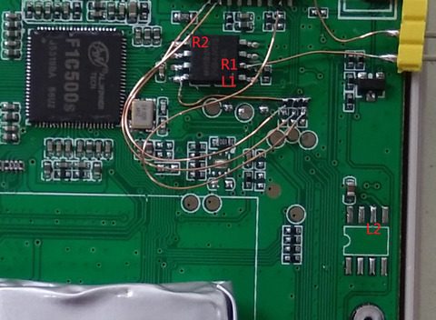
完成
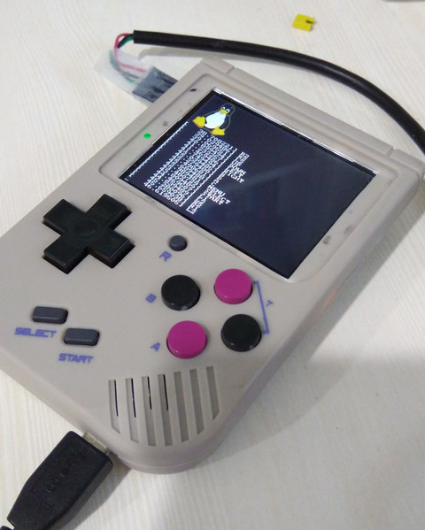